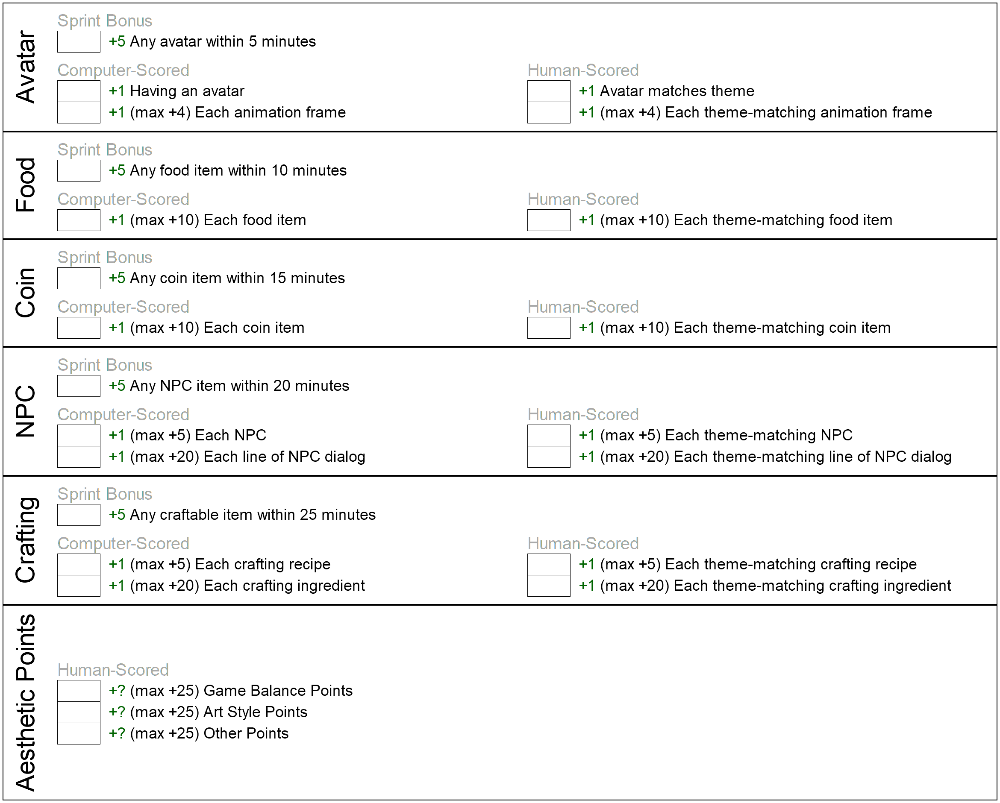
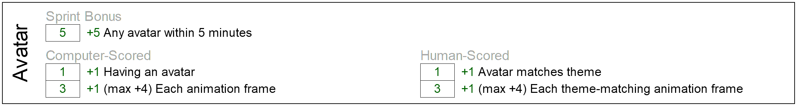
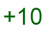

Scholastic Game Jam
Welcome to the official Scholastic Game Jam rules.
What is the Scholastic Game Jam? It’s a competition in which players have a limited amount of time to create a video game on a theme announced on the day of the competition.
Games are scored:
1) Objectively, based on the presence or absence of certain game features.
2) Subjectively, based on how creatively these features are rendered.
Winning teams usually receive some kind of prize.
1 How to Enter
Your school must be a participating school with a registered team. If this is the case, your school’s coach will take care of registration for your team.
2 Day of Competition
On the day of competition (or before), the coach will register each student on the school’s team and will also note which students will be competing solo and which will be competing in pairs.
The players will sit in their designated area and await the announcement of the Game Jam prompt. Until the day of competition, the prompt is a closely guarded secret. When the prompt is announced, all teams may begin working on their game immediately. They may continue until the scoring phase begins.
During the scoring phase, judges will calculate a final score for each team. The final score is calculated as the sum of every game’s score, divided by the number of players on the team. (For players competing in pairs, the game’s score is doubled.)
2.1 Example
Suppose a team consists of Jimmy, Sally, Marco, and Marta. Suppose that Jimmy and Marco are competing as a pair. Now, suppose the final game scores are as follows:
1) 100 points for Jimmy and Marco’s game. 2) 100 points for Sally’s game. 3) 100 points for Martha’s game.
Jimmy and Marco receive 200 points for their game, because they are a pair. This means the team’s total is 400 points. The final score for the team would be 400 points divided by the 4 players.
Or 100 points.
This is the score that judges will use to rank teams. If no other team has a better score than 100, then Jimmy, Sally, Marco, and Martha’s team wins.
Teams must have between 6 and 10 players and must be registered prior to the start of competition.
3 How are Games Scored?
Judges will use the a rubric to score games. The rubric will be announced more than 8 weeks before the day of competition (and often will be announced many months before). The upcoming rubric is as follows:
Game Type: Survival Game with Crafting
Scorable Features:
* avatar * Inventory Items * Food * Crafting/Recipes * Non-Player Characters
3.1 Score Sheet
For convenience, we’ve created this scoresheet for players, coaches, spectators, and judges to use. It is intended to serve as a quick overview of the scoring system. For more details, see the following sections.
<Score sheet...>
3.2 Avatar
The game must have an avatar that can be moved with the arrow keys. The avatar must lose health over time and must gain health by eating food.
Computer-Scored Points:
* +1 for having an avatar at all * +5 sprint bonus. Implement an avatar within the first 5 minutes of the competition. * +1 per animation frame. Max +4
Human-Scored Points:
* +5 for walking animation * +5 for theme cohesion
3.3 Example
Suppose the Game Jam prompt is announced to be: "Slimes vs Unicorns. Slimes have taken over the forest, and the unicorns must learn to survive in the desert."
Suppose that within the first 5 minutes of the competition, Marco creates a avatar that looks like a red circle. This qualifies him for a +5 sprint bonus.
Suppose he goes on to create three animation frames of unicorn walking, which his avatar use while walking and replaces the red circle with these animation frames. (The sprint bonus has already been awarded, so he does not lose the bonus points.)
Computer-awarded points: * +1 for having an avatar * +3 for his animation frames
Human-awarded points: * +5 for the fact that the animation is a walking animation (as opposed to just three random images). * +5 for the fact that the animation depicts a unicorn. (A slime would also have been acceptable.)
The total would be +19 points.
3.4 Food
The game must have food items that the avatar can consume in-game.
Computer-Scored Points:
* +1 for each food item in game. Max +10. * +5 sprint bonus. Implement at least one food item within the first 10 minutes of the competition.
Human-Scored Points:
* +1 per food item for theme cohesion. Max +10
3.5 Example
Suppose (as in the example in the previous section) that Marco creates three food items:
* Prickly Pears, which give the avatar +1 health * Sand Bread, which gives the avatar +5 health * Prickly Pear Pie, which gives the avatar +10 health
Also, suppose he created the berries within the first 10 minutes of the competition. This would qualify him for a +5 sprint bonus.
Furthermore, he would recieve:
* +3 for the food items (+1 for each) – simply for having them. * +3 for each item that pertains to the theme (presumably Prickly Pears, Sand Bread, and Prickly Pear Pie can help unicorns survive in the desert).
That would be a total of +11 points. Added to his previous score of +19, that would be +30 points so far!
3.6 Non-Food Items
The game must have non-food items that can be picked up and used for crafting.
Computer-Scored Points:
* +1 for each non-food item in game. Max +10. * +5 sprint bonus. Implement at least one non-food item within the first 15 minutes of the competition.
Human-Scored Points:
* +1 per non-food item for theme cohesion. Max +10
3.7 Example
Suppose we continue our example from the previous section. Marco creates on non-food item – a Sand Grinding Rock. But suppose he loses some time because he must track down a bug in his code. He ends up completing his Sand Grinding Rock by the 16-minute mark. This means he cannot get the sprint bonus in this category.
However, he does recieve +1 for having an item and +1 for the fact that a Sand Grinding Rock does sound like something a unicorn might need to survive in a desert.
That’s +2 in this category. He’s at +32 so far.
3.8 Non-Player Characters
The game must have Non-Player Characters (NPCs).
Computer-Scored Points:
* +1 for each NPC in game. Max +5. * +1 for each line of dialog an NPC has (Max +4 per NPC). * +5 sprint bonus. Implement at least one NPC within the first 20 minutes of the competition.
Human-Scored Points:
* +1 per NPC for theme cohesion. Max +5. * +1 for each line of dialog an NPC has that is cohesive with the theme (Max +4 per NPC).
3.9 Example
Suppose, in our running example, Marco creates 1 NPC by the 19-minute mark.
The NPC is a desert nomad with two lines of dialog about the weather in the desert and one line about how to make Prickly Pear Pie.
Marco would receive the sprint bonus of +5, along with +1 for having an NPC and +3 for its lines of dialog. Since the NPC looks it belongs in the desert, Marco would also get an additional +1. And since the dialog lines are all theme-cohesive, he would get an additional +3.
That’s a total of: +13. He now has +45 total.
3.10 Crafting/Recipes/Tech-tree
The game must have "recipes", allowing new items to be created from existing ones.
A recipe involves three things:
* Inputs. A list of input items. E.g. marshmallows, chocolate, and crackers. * Output. A single output item. E.g. a chocolate s’more. * Trigger. An in-game entity that serves as the place where the recipe can be triggered. E.g. a campfire.
Note that the word "recipe" does not imply that the inputs or outputs must be food. Here’s another example:
* Inputs. A list of input items. E.g. wood and matches. * Output. A single output item. E.g. a campfire. * Trigger. An in-game entity that serves as the place where the recipe can be triggered. E.g. a firepit.
And yes, the output of one recipe can become either the inputs of another recipe or even the trigger for another recipe. For example, to make s’mores, you may have to first produce a campfire.
Computer-Scored Points:
* +1 for each recipe in game. Max +10. * +1 for each ingredient in a recipe. Max +4 per recipe. * +5 sprint bonus. Implement at least one recipe within the first 25 minutes of the competition.
Human-Scored Points:
* +1 per recipe for theme cohesion. Max +10 * +1 for each theme-cohesive ingredient in a recipe. Max +4 per recipe.
Note that all recipes must be craftable in game.
3.11 Example
Suppose, in our running example, Marco creates two recipes:
* Triggered at the cooking cauldron: Prickly Pears + Sand Bread can make Prickly Pear Pie. * Triggered at the cooking cauldron: Sand + Sand Grinding Rock makes Sand Bread
These recipes form a chain (one is the input to another)
<Tree or chain? Can we simplify this?? [>
4 Documentation
avatar Food Non-Food NPC Recipes
5 Training Recommendations
5.1 Training Badges
Coaches will train competitors by helping them acquire the necessary skills to excel at the Game Jam competition. Competitors who have mastered these skills will receive badges. These badges serve as visual, wearable representations of a competitor’s hard work.
Badge key:
 - Meta Badges - for skills related to excelling as a Game Jam competitor.
- Avatar Badges - for skills related to creating avatars
- Food Badges - for skills related to creating food items
- Non-Food Badges - for skills related to creating non-food items
 - NPC Badges - for skills related to creating NPCs
 - Recipe Badges - for skills related to creating recipes
5.1.1 Day 1 Badges
These are called "day 1" badges because we recommend that competitors earn these badges before earning any other badges. They help reenforce team values and help orient the competitors toward the challenges that face them.
Core Values: Level 1 (1 minute.)
Can recite the first three ThoughtSTEM core values
It’s not about my code. It’s about what I can code.
It’s not about me. It’s about us.
[Hand motions?]
Game Jam Specs: Level 1 (1 minute.)
Can recite the specs for the upcoming Game Jam.
Game Type: Survival Game
Time Limit: 40 minutes
- Categories:
Avatar: 20 points
Food Items: 25 points
Non-Food Items: 25 points
Non-Player Characters: 30 points
Crafting: 55 points
This badge should be re-earned any time the specs change. Or any time there’s a new upcoming jam. The specs do change from time to time. (And that in itself is a valuable lesson.)
Meta Kata: Level 1 (1 minute.)
Can recite answer to: What is a Kata badge?
Calmly
Quickly
Accurately
First Kata (5 minute)
Within five minutes, the student can translate an English sentence of this type:
Make an avatar that looks like a red circle that is 80 pixels across.
To code of this type:
(survival-game-jam #:player (basic-player-entity (square 40 'solid 'red)))
___
Note: To award this badge, a student should be able to do the above in under 1 minute. But doing it once is too easy. The student should do this multiple times with different shapes: e.g. blue square, green star, etc.
<Kata Badges>
avatar: 5 minutes, 2.5 minutes Food: 5 minutes, 2.5 minutes Non-Food: 5 minutes, 2.5 minutes NPC: 5 minutes, 2.5 minutes Recipes: 5 minutes, 2.5 minutes
<Sprint Badges>
Under 5 minutes: avatar + Food Under 10 minutes: avatar + Food + Non-Food Under 15 minutes: avatar + Food + Non-Food + NPC Under 15 minutes: avatar + Food + Non-Food + NPC + Recipe
<x10 Badges>
Under 5 minutes: 10 different NPCs Under 5 minutes: 10 different Non-Food Items Under 5 minutes: 10 different Food Items Under 5 minutes: 10 different Recipes Under 10 minutes: 10 different Recipes in a tree
Note that these badges must be "refreshed". You don’t get to keep them if you’re not practicing...
5.2 Collaboration Badges
<Teaching badges>
* A badge for how you help someone else earn a badge.
For any badge above, if you have already earned it and you’ve earned the teaching badge, you can get a badge for helping someone earn a badge.
5.3 Competition Badges
<Practice Jam Badges>
Do a 1 hour game jam. Do a 1 hour game jam. Get __ points. Do a 1 hour game jam. Get __ points. Do a 1 hour game jam. Get __ points.
<Compete in a real game Jam>
1st Competition 2nd Competition 3rd Competition 4th Competition 5th Competition ...
TODO: Somewhere, say something about doing a coding phase and an art phase...